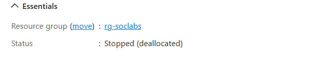

Objective
Deploy a Windows honeypot in Azure, collect authentication events centrally, create a Sentinel analytics rule for repeated failures, then investigate the resulting alert and document the case.
A hands-on SOC lab building an end-to-end path from Windows authentication telemetry to SIEM detection, alert triage, evidence review and case documentation.
The goal was to build a practical detection workflow and learn how to validate what the data supports before drawing conclusions.
Deploy a Windows honeypot in Azure, collect authentication events centrally, create a Sentinel analytics rule for repeated failures, then investigate the resulting alert and document the case.
Provisioned and configured the lab resources, connected telemetry, wrote and refined KQL, reviewed event fields, triaged alert context, recorded limitations and deallocated the VM when finished.
Each handoff matters: an installed agent alone does not prove that the intended events reach the workspace.
Windows Security events 4625 (failed logon) and 4624 (successful logon) were the key event IDs used for the authentication review.
The rule looks for repeated failed authentication activity within a defined period. A threshold is a triage trigger; it is not proof of malicious intent.
Configure AMA and the DCR so Windows Security events are routed into the Log Analytics workspace.
Filter for event 4625, then group by time and source context to understand volume and recurring patterns.
Use a threshold-based Sentinel analytics rule to create an alert for analyst review and case handling.
SecurityEvent | where EventID in (4624, 4625) | project TimeGenerated, Computer, EventID, Account, LogonType, IpAddress, Activity | summarize EventCount = count() by EventID, LogonType, IpAddress, bin(TimeGenerated, 15m) | order by TimeGenerated desc
Query pattern shown for explanation; the exact analytics rule threshold and time window are not asserted here. Validate table schema and collection scope in the target workspace before use.
Findings are limited to the observed events and the queried time range. Missing evidence is not treated as proof that an event never occurred.
Repeated failures were returned by the reviewed query and used to drive alert triage.
Both were considered as investigation pivots. Attribution to a person or actor was not established.
Type 3 indicates a network logon category. It does not, on its own, establish Remote Desktop activity.
No corresponding successful logon was returned by that query for the reviewed window.
Alert context, investigative notes and the conclusion were recorded for follow-up.
The available evidence does not confirm a successful compromise or prove that the activity was RDP. The conclusion stays bounded to the logs and time range reviewed.

Actual Azure portal evidence, cropped to the VM status and resource group. Identity, subscription and network fields are excluded.
The strongest outcome was learning to connect platform setup, detection logic and careful evidence interpretation into one analyst workflow.
Check ingestion before tuning detection. Preserve the time window and query context. Separate observation from inference. Treat IPs as pivots rather than identity. State the limits of a negative result. Record the case so another analyst can follow the reasoning.
Practical next steps to make the detection more resilient and the investigation easier to reproduce.
Document the exact threshold and lookback, test with benign activity, tune expected noise, and enrich alerts with host, account, source IP and event details.
Record the UTC query window, query text, workspace/table scope, event sample and decision rationale. Re-check collection health before relying on negative results.